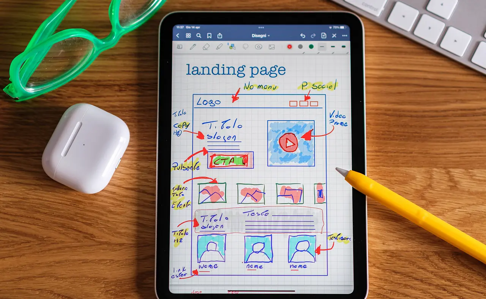

Bài viết
Kinh nghiệm làm website, AI và video cho doanh nghiệp
Những điều nên biết trước khi thuê làm website, landing page, video, bao bì hay tự động hóa quy trình bằng AI: chi phí, quy trình, cách chọn đơn vị làm. Viết từ kinh nghiệm làm nghề của Dream Labs.

Thiết kế UX/UI website doanh nghiệp: nguyên tắc khiến khách chủ động liên hệ
Nguyên tắc thiết kế UX/UI website doanh nghiệp: phân cấp thị giác, nút CTA, form liên hệ, tín hiệu niềm tin và khả năng tiếp cận theo WCAG, kèm checklist.22 tháng 11, 2026 · 13 phút đọc
Tốc độ website và Core Web Vitals: vì sao web chậm làm mất khách, cách đo và cải thiện
Core Web Vitals gồm LCP, INP, CLS: ngưỡng tốt theo web.dev, cách đo bằng PageSpeed Insights, Search Console và các bước tăng tốc website cụ thể.22 tháng 11, 2026 · 13 phút đọc
Bảo mật website doanh nghiệp: HTTPS, sao lưu, phân quyền và cách xử lý khi bị hack
Bảo mật website doanh nghiệp: HTTPS, sao lưu 3-2-1, cập nhật, mật khẩu và 2FA, phân quyền, chống brute force, DDoS và các bước xử lý khi bị hack.22 tháng 11, 2026 · 13 phút đọcCách chọn tên miền, hosting và email theo tên miền cho doanh nghiệp
Cách đặt tên miền .vn hay .com, chọn hosting theo loại website, cài DNS và email tên miền có SPF, DKIM, DMARC để không vào spam, đứng tên doanh nghiệp.22 tháng 11, 2026 · 13 phút đọc
Brief thiết kế website: doanh nghiệp cần chuẩn bị gì trước khi thuê làm web
Brief thiết kế website gồm mục tiêu, khách hàng, sơ đồ trang, nội dung, thương hiệu, ngân sách, thời hạn. Kèm mẫu brief dạng bảng và checklist dùng ngay.22 tháng 11, 2026 · 12 phút đọc
Cách chọn công ty thiết kế website uy tín: checklist, câu hỏi nên hỏi và dấu hiệu cảnh báo
Cách chọn công ty thiết kế website uy tín: checklist portfolio, quy trình, hợp đồng, quyền sở hữu, bảo hành, câu hỏi nên hỏi và dấu hiệu cảnh báo.22 tháng 11, 2026 · 13 phút đọc
Thiết kế website chuẩn mobile: responsive, vùng chạm, chữ, form, nút Zalo và tốc độ trên 4G
Website chuẩn mobile là gì, responsive khác mobile-first ra sao, kích thước nút bấm theo WCAG, menu, form, nút Zalo, tốc độ 4G và cách tự kiểm tra.22 tháng 11, 2026 · 13 phút đọc
Quản trị website sau bàn giao: nhận gì, cập nhật thế nào và đo bằng GA4, Search Console
Quản trị website sau bàn giao: danh sách cần nhận, lịch cập nhật nội dung, sự kiện GA4 nên đo, báo cáo Search Console và lịch kiểm tra tuần, tháng, quý.22 tháng 11, 2026 · 13 phút đọc
Thiết kế website sang trọng cho thương hiệu cao cấp: điều gì tạo nên cảm giác luxury
Thiết kế website sang trọng, luxury: khoảng trắng, typography, màu tiết chế, ảnh, chuyển động, giọng văn, đặt hẹn riêng tư, tốc độ. Ví dụ theo ngành.22 tháng 11, 2026 · 13 phút đọc Tự động hóa AI
Tự động hóa AITự động hóa kế toán bằng AI cho doanh nghiệp nhỏ: từ chứng từ đến công nợ
Tự động hóa kế toán bằng AI cho doanh nghiệp nhỏ: đọc chứng từ, phân loại chi phí, đối chiếu sao kê, nhắc công nợ qua Zalo. Việc nào vẫn cần kế toán.19 tháng 11, 2026 · 9 phút đọc Tự động hóa AI
Tự động hóa AIAI viết báo cáo kinh doanh tự động: bản tin sáng, tuần, tháng cho chủ doanh nghiệp
Cách để AI viết báo cáo kinh doanh tự động: chọn KPI, dựng bản tin sáng, tuần, tháng, cảnh báo bất thường, đề xuất việc cần làm và chặn lỗi AI bịa số.19 tháng 11, 2026 · 7 phút đọc Tự động hóa AI
Tự động hóa AITự động trả lời khách trên Zalo OA và Facebook bằng chatbot AI
Cách tự động trả lời khách trên Zalo OA, Messenger và bình luận Facebook bằng chatbot AI: kịch bản, kho kiến thức, thu thông tin khách, chuyển người thật.19 tháng 11, 2026 · 8 phút đọc Tự động hóa AI
Tự động hóa AIQuản lý kho và đơn hàng tự động cho doanh nghiệp bán đa kênh
Quản lý kho và đơn hàng tự động khi bán đa kênh: gom đơn về một nơi, AI đọc tin nhắn chốt đơn, trừ tồn kho, cảnh báo hết hàng, báo trạng thái giao.19 tháng 11, 2026 · 9 phút đọc Tự động hóa AI
Tự động hóa AIỨng dụng AI cho phòng khám, spa, nhà hàng: đặt lịch, nhắc hẹn, chăm sóc khách
Ứng dụng AI cho phòng khám, spa, nhà hàng: tự động đặt lịch, đặt bàn, nhắc hẹn, chăm sóc sau dịch vụ, thu phản hồi và lưu ý bảo mật thông tin khách.19 tháng 11, 2026 · 8 phút đọc Tự động hóa AI
Tự động hóa AIChi phí và lộ trình triển khai tự động hóa cho doanh nghiệp vừa và nhỏ
Chi phí triển khai tự động hóa cho SME gồm những khoản nào, lộ trình 90 ngày, chọn quy trình đầu tiên, tính thời gian tiết kiệm, tự làm hay thuê ngoài.19 tháng 11, 2026 · 8 phút đọc Website
WebsiteThiết kế website chuẩn SEO 2026: checklist kỹ thuật và nội dung
Thiết kế website chuẩn SEO 2026: checklist URL, tiêu đề, heading, Core Web Vitals, mobile, schema, sitemap, Search Console và nội dung hữu ích.19 tháng 11, 2026 · 9 phút đọc Landing Page
Landing PageLanding page chạy quảng cáo Facebook, TikTok: làm sao cho khớp từng nền tảng
Landing page chạy quảng cáo Facebook, TikTok: khớp thông điệp, tối ưu trình duyệt trong app, gắn pixel, UTM, A/B test và khác biệt giữa hai nền tảng.19 tháng 11, 2026 · 8 phút đọc Website
WebsiteWebsite đa ngôn ngữ cho doanh nghiệp xuất khẩu: làm sao để bên mua nước ngoài tin và hỏi giá
Website đa ngôn ngữ cho doanh nghiệp xuất khẩu: chọn ngôn ngữ theo thị trường, URL và hreflang, dịch thuật, nội dung B2B, form hỏi giá RFQ và SEO quốc tế.19 tháng 11, 2026 · 9 phút đọc Thiết kế sản phẩm
Thiết kế sản phẩmThiết kế bao bì cao cấp cho sản phẩm Việt: nâng tầm đặc sản, quà tặng, mỹ phẩm
Thiết kế bao bì cao cấp cho đặc sản, OCOP, quà tặng, mỹ phẩm Việt: chọn chất liệu, kỹ thuật in, câu chuyện, trải nghiệm mở hộp và cân đối chi phí in.19 tháng 11, 2026 · 9 phút đọc Video & Motion
Video & MotionVideo motion graphic giới thiệu sản phẩm: kịch bản, 3D và quy trình
Làm video motion graphic giới thiệu sản phẩm: khi nào nên dùng, kịch bản 30–90 giây, render 3D, bản dọc và ngang, phụ đề, lồng tiếng và quy trình làm.19 tháng 11, 2026 · 8 phút đọc Edit video
Edit videoEdit video TikTok, Reels bán hàng: từ quay điện thoại đến lịch đăng cả tuần
Edit video TikTok, Reels bán hàng: viết 3 giây đầu, cấu trúc video ngắn, khung an toàn 9:16, quay điện thoại dễ dựng, sản xuất theo lô và đo bằng số liệu.19 tháng 11, 2026 · 9 phút đọc
Doanh nghiệp nhỏ có nên dùng AI không? Khi nào nên, khi nào chưa nên
Doanh nghiệp nhỏ nên dùng AI cho việc lặp lại, có người kiểm tra. Bài chỉ ra khi nào nên, khi nào chưa, việc dùng được ngay, chi phí và rủi ro.19 tháng 11, 2026 · 12 phút đọc
AI có thay thế được nhân viên kế toán không? Ranh giới việc và trách nhiệm
AI làm thay phần nhập liệu, đối chiếu, nhưng không thay được người chịu trách nhiệm kế toán theo luật. Việc AI làm được, kỹ năng cần có và cách tổ chức.19 tháng 11, 2026 · 10 phút đọc
Tự động hóa quy trình doanh nghiệp bắt đầu từ đâu? Chọn, vẽ, đo và chuẩn bị dữ liệu
Bắt đầu tự động hóa từ việc liệt kê việc làm tay, chấm điểm chọn quy trình đầu tiên, vẽ quy trình, đo trước sau và chuẩn bị dữ liệu. Có bảng mẫu.19 tháng 11, 2026 · 10 phút đọcDùng AI như ChatGPT có lộ dữ liệu doanh nghiệp không? Chính sách, cấu hình và quy tắc nội bộ
Dùng ChatGPT, Gemini, Claude có thể lộ dữ liệu nếu sai gói, sai cấu hình. Chính sách từng dịch vụ, cách cài đặt an toàn và quy định dữ liệu cá nhân.19 tháng 11, 2026 · 11 phút đọc
n8n là gì, có miễn phí không? Giấy phép, bản tự host, bản cloud và khi nào nên thuê làm
n8n miễn phí khi tự cài cho nội bộ doanh nghiệp, bản cloud tính phí theo lượt chạy. Giải thích giấy phép, chi phí thật, so sánh Make, Zapier.19 tháng 11, 2026 · 13 phút đọc
AI agent là gì, khác chatbot thế nào? Doanh nghiệp nhỏ có cần AI agent không
Chatbot trả lời câu hỏi, AI agent tự làm việc nhiều bước bằng công cụ được cấp quyền. So sánh rõ, ví dụ theo ngành, rủi ro và khi nào nên dùng.19 tháng 11, 2026 · 10 phút đọc
RPA là gì? Khác gì tự động hóa bằng AI và doanh nghiệp nhỏ nên chọn cách nào
RPA là robot phần mềm bắt chước thao tác chuột, bàn phím theo quy tắc cố định; AI đọc hiểu và phán đoán. So sánh, ví dụ, khi nào dùng RPA, AI hay API.19 tháng 11, 2026 · 10 phút đọc
CRM là gì, doanh nghiệp nhỏ có cần CRM không? Từ Google Sheets đến phần mềm CRM
Doanh nghiệp nhỏ cần quản lý khách tập trung, chưa chắc cần phần mềm CRM ngay. Khi nào Google Sheets đủ, tiêu chí chọn CRM, nối Zalo, Facebook.19 tháng 11, 2026 · 11 phút đọc
Thiết kế website mất bao lâu? Thời gian theo từng loại web, từng giai đoạn và cách làm nhanh hơn
Thiết kế website mất bao lâu: 1–2 tuần cho web giới thiệu, 3–6 tuần cho web thiết kế riêng. Các giai đoạn, nguyên nhân chậm và việc cần chuẩn bị.19 tháng 11, 2026 · 12 phút đọc
Duy trì website mỗi năm tốn bao nhiêu? Tên miền, hosting, SSL, email và bảo trì
Chi phí duy trì website hằng năm gồm tên miền, hosting, SSL, email, bảo trì. Phí .vn theo Thông tư 10/2025/TT-BTC, bảng dự trù và cách tránh phí ẩn.19 tháng 11, 2026 · 12 phút đọcLàm website bằng WordPress hay code tay? So sánh công bằng để chọn đúng
Làm website bằng WordPress hay code tay: so sánh chi phí, tốc độ, bảo mật, cập nhật plugin, chi phí lâu dài, quyền sở hữu và khi nào nên chọn cách nào.19 tháng 11, 2026 · 10 phút đọc
Đã có fanpage, Shopee thì có cần làm website không? Khi nào nên làm, khi nào chưa
Đã có fanpage, Shopee có cần website không: không bắt buộc, nhưng nên làm khi muốn chủ động khách, xây thương hiệu, bán sỉ. So sánh 3 kênh và cách kết hợp.19 tháng 11, 2026 · 10 phút đọc
Landing page khác website thế nào? Khi nào cần landing page, khi nào cần website?
Landing page là một trang cho một mục tiêu, website là nhiều trang giới thiệu cả doanh nghiệp. So sánh 9 tiêu chí và cách chọn theo giai đoạn kinh doanh.19 tháng 11, 2026 · 13 phút đọc
Tự làm landing page bằng công cụ kéo thả hay thuê thiết kế? So sánh chi phí, tốc độ và đo lường
Tự làm landing page bằng LadiPage, Elementor, Wix rẻ lúc đầu nhưng có chi phí ẩn. So sánh công bằng và checklist khi nào nên tự làm, khi nào nên thuê.19 tháng 11, 2026 · 12 phút đọcThiết kế logo bao nhiêu tiền? Điều gì quyết định giá và bạn nên nhận được gì khi bàn giao
Giá thiết kế logo dao động rất rộng, từ vài trăm nghìn đến hàng chục triệu. Điều gì quyết định giá, cần nhận file gì và cách bảo hộ nhãn hiệu.19 tháng 11, 2026 · 12 phút đọc
Nhãn sản phẩm bắt buộc ghi những gì? Cập nhật theo Nghị định 37/2026/NĐ-CP
Từ 23/01/2026, nhãn hàng hóa theo Nghị định 37/2026/NĐ-CP thay NĐ 43/2017. Nội dung bắt buộc chung, theo nhóm hàng, cách ghi hạn dùng và lỗi khi thiết kế.19 tháng 11, 2026 · 13 phút đọc
Video motion graphic là gì? Khác gì animation, video quay và giá bao nhiêu?
Motion graphic là video dùng đồ họa chuyển động để truyền thông điệp. Bài giải thích khác gì animation, video quay, các loại phổ biến và giá tính ra sao.19 tháng 11, 2026 · 11 phút đọcLàm video motion graphic mất bao lâu? Quy trình từng bước và bạn cần duyệt gì
Video motion graphic thường mất từ vài ngày đến ba tuần. Xem thời gian từng bước: brief, kịch bản, storyboard, styleframe, animate, lồng tiếng, sửa.19 tháng 11, 2026 · 10 phút đọc
Thuê edit video bao nhiêu tiền? Cách tính giá theo video, theo phút, theo tháng
Giá thuê edit video tính theo video, theo phút hoặc theo tháng; tăng theo độ dài, phụ đề, hiệu ứng, số bản xuất. So freelancer, agency và giá Dream Labs.19 tháng 11, 2026 · 10 phút đọcTự edit video bằng CapCut hay thuê editor? Cách chọn theo thời gian, chất lượng và bản quyền
Tự edit bằng CapCut hợp video đơn giản, đăng hằng ngày. Thuê editor khi cần chất lượng đều, video quảng cáo, nhạc bản quyền rõ. Cách tính và kết hợp.19 tháng 11, 2026 · 10 phút đọc Website
WebsiteChi phí thiết kế website doanh nghiệp năm 2026: bảng giá và những gì bạn nhận được
Chi phí thiết kế website doanh nghiệp 2026: bảng giá 3 gói tại Dream Labs, mỗi gói nhận được gì, thời gian làm, cách chọn gói theo giai đoạn kinh doanh.18 tháng 11, 2026 · 7 phút đọc
Tự động hóa AITự động hóa báo cáo và sổ sách bằng AI cho doanh nghiệp nhỏ: bắt đầu từ đâu
Tự động hóa báo cáo và sổ sách bằng AI cho doanh nghiệp nhỏ: chọn báo cáo đầu tiên, chuẩn hóa dữ liệu, để AI viết nhận xét, kiểm soát sai sót và chi phí.18 tháng 11, 2026 · 7 phút đọc
Tự động hóa AITự động hóa quy trình doanh nghiệp bằng AI: bắt đầu từ đâu, tốn bao nhiêu
Hướng dẫn tự động hóa quy trình doanh nghiệp bằng AI: chọn quy trình nào trước, các bước triển khai, chi phí, rủi ro và cách chọn đơn vị làm.17 tháng 11, 2026 · 7 phút đọc Website
WebsiteBáo giá thiết kế website 2026: chi phí làm website gồm những gì
Báo giá thiết kế website 2026: chi phí làm website gồm những khoản nào, vì sao giá chênh lệch, phí duy trì hằng năm và cách đọc báo giá không phát sinh.17 tháng 11, 2026 · 6 phút đọc Website
WebsiteThiết kế website cao cấp cho doanh nghiệp: điều gì làm nên khác biệt
Thiết kế website chuyên nghiệp, cao cấp cho doanh nghiệp: tiêu chí đánh giá, quy trình làm, những sai lầm hay gặp và cách chọn đơn vị thiết kế phù hợp.17 tháng 11, 2026 · 5 phút đọc Landing Page
Landing PageThiết kế landing page bán hàng: cấu trúc để khách để lại thông tin
Thiết kế landing page bán hàng chuyển đổi cao: cấu trúc từng khối, cách viết tiêu đề, form thu lead, đo lường quảng cáo, A/B test và bảng giá tham khảo.17 tháng 11, 2026 · 5 phút đọc Thiết kế sản phẩm
Thiết kế sản phẩmThiết kế bao bì sản phẩm: từ ý tưởng, nhận diện đến mockup 3D
Thiết kế bao bì sản phẩm chuyên nghiệp: quy trình, thông tin bắt buộc trên nhãn, làm việc với nhà in, mockup 3D quảng cáo, nhận diện và chi phí.17 tháng 11, 2026 · 5 phút đọc Video & Motion
Video & Motion